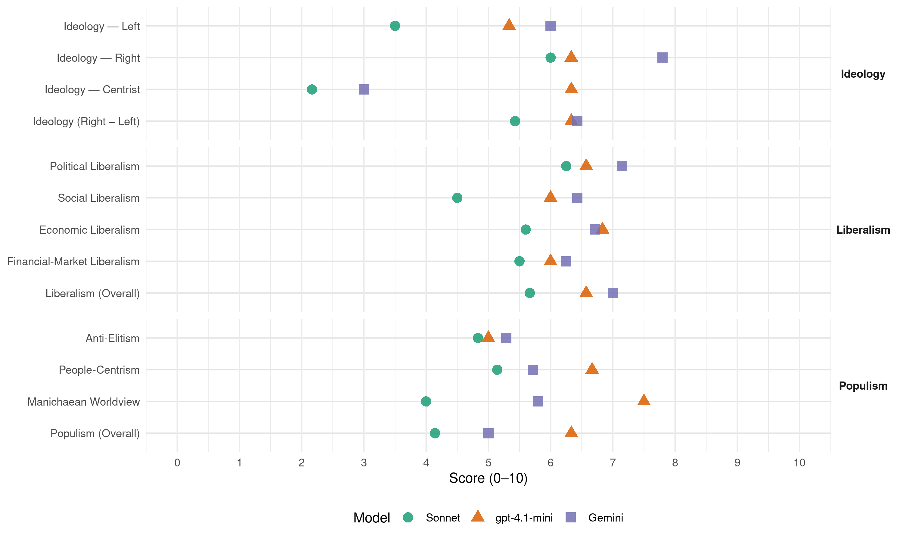

MHP (Turkey, 2015)
manifesto_id 74712_201511
Get full text: This site shows derived annotations and short verbatim quotes only. The full manifesto text is © Manifesto Project / WZB — obtain it via manifesto-project.wzb.eu using the manifesto_id above.
Headline scores
| Dimension | Sonnet | gpt-4.1-mini | Gemini |
|---|---|---|---|
| Populism (Overall) | 4.1 | 6.3 | 5.0 |
| Anti-Elitism | 4.8 | 5.0 | 5.3 |
| People-Centrism | 5.1 | 6.7 | 5.7 |
| Manichaean Worldview | 4.0 | 7.5 | 5.8 |
| Ideology (Right − Left) | 5.4 | 6.3 | 6.4 |
| Liberalism (Overall) | 5.7 | 6.6 | 7.0 |
| Political Liberalism | 6.2 | 6.6 | 7.1 |
| Social Liberalism | 4.5 | 6.0 | 6.4 |
| Economic Liberalism | 5.6 | 6.8 | 6.7 |
| Financial-Market Liberalism | 5.5 | 6.0 | 6.2 |
Evidence per dimension
Economic Liberalism
Gemini · score 7.0 · verified · chunk 1
“Serbest teşebbüsün esas olduğu, üretimin teşvik”
Serbest teşebbüsün esas olduğu, üretimin teşvik edildiği, rekabetçi ve hakkaniyetli bir ekonomi politikasını savunmakta, Türk girişimcisinin dünya ekonomisinde söz sahibi olabilmesi için
Gemini · score 7.0 · verified · chunk 2
“piyasa ekonomisi kurallarının işletilerek tekelci”
Piyasa ekonomisi kurallarının işletilerek tekelci oluşumların ve haksız rekabetin önlenmesi, kamunun ekonomideki rolünün yol gösterici
Gemini · score 7.0 · verified · chunk 3
“devletin ekonomiye doğrudan müdahalesinin sınırlandırılması, verimliliğin arttırılması”
Özelleştirmede amaç, devletin ekonomiye doğrudan müdahalesinin sınırlandırılması, verimliliğin arttırılması, ekonomide rekabet ortamının
Gemini · score 8.0 · verified · chunk 4
“tam rekabetçi piyasa yapısı tesis edilecektir”
piyasada hâkim güç oluşturma hareketleri dizginlenecek, bununla ilgili mevzuatta yer alan sınırlayıcı hükümler kararlılıkla uygulanacak, sektörle işbirliği içinde mevzuat yenilenecek, tam rekabetçi piyasa yapısı tesis edilecektir.
Gemini · score 6.0 · verified · chunk 5
“özel sektörün imkânlarından da azami”
okul öncesi eğitim kad emesind e yüzd e yüz okullaşmanın temini için özel sektörün imkânlarından da azami ölçüd e is tifad e edilecektir.
Gemini · score 7.0 · verified · chunk 6
“Özel sağlık kurumları teşvik edilecek”
sağlık çalışanlarına yönelik şidd et önlenecek Özel sağlık kurumları teşvik edilecek, sağlık t urizminin geliştiril mesi
Gemini · score 5.0 · verified · chunk 7
“Gümrük Birliği ilişkisinin asimetrik özelliğinin gid erilerek”
Öte yandan A B ile mevcut Gümrük Birliği ilişkisinin asimetrik özelliğinin gid erilerek, Türkiye’yi ilgilendiren ticaret politikaları alanlarında ülkemizin d e söz hakkına sah ip olacağı
gpt-4.1-mini · score 7.0 · verified · chunk 1
“Serbest teşebbüsün esas olduğu, üretimin teşvik edildiği, rekabetçi ve hakkaniyetli bir ekonomi politikasını savunmakta, Türk girişimcisinin dünya ekonomisinde söz sahibi olabilmesi için Türk firma ve markalarının küresel düzeyde rekabet gücü kazanmasına stratejik bir önem atfetmekteyiz”
Serbest teşebbüsün esas olduğu, üretimin teşvik edildiği, rekabetçi ve hakkaniyetli bir ekonomi politikasını savunmakta, Türk girişimcisinin dünya ekonomisinde söz sahibi olabilmesi için Türk firma ve markalarının küresel düzeyde rekabet gücü kazanmasına stratejik bir önem atfetmekteyiz.
gpt-4.1-mini · score 7.0 · verified · chunk 2
“Piyasa ekonomisi kurallarının işletilerek tekelci oluşumların ve haksız rekabetin önlenmesi”
Piyasa ekonomisi kurallarının işletilerek tekelci oluşumların ve haksız rekabetin önlenmesi, kamunun ekonomide rolünün yol gösterici, düzenleyici ve denetleyici faaliyetlerle sınırlandırılması
gpt-4.1-mini · score 7.0 · verified · chunk 3
“sermaye piyasalarının gelişimi ile ya bancı yatırımcı etki ve kontrolünd en kurt ul masını sağlayacak tedbirler alınacak, daha fazla küçük ve orta ölçek li yurt içi yatırımcının sis teme girmesini sağlayacak yöntemler geliştiril mek suretiyle”
…sermaye piyasalarının gelişimi ile ya bancı yatırımcı etki ve kontrolünd en kurt ul masını sağlayacak tedbirler alınacak, daha fazla küçük ve orta ölçek li yurt içi yatırımcının sis teme girmesini sağlayacak yöntemler geliştiril mek suretiyle d e piyasaların yeterli d erinliğe kavuşması temin edilecektir. Finansal ürünlerin yeterli çeşitliliğe sah ip ol ması ve finansal farkındalığın artırıl ması sağlanacaktır….
gpt-4.1-mini · score 7.0 · verified · chunk 4
“serbest piyasa, rekabet, işletme, vergi, ticaret, özelleştirme”
…serbest piyasa, rekabet, işletme, vergi, ticaret, özelleştirme ve yatırım teşvikleri artırılacaktır…
gpt-4.1-mini · score 6.0 · verified · chunk 5
“Vergi tabana yayılacak, yoksul kesimin vergi yükü hafifletilecek”
Vergi tabana yayılacak, yoksul kesimin vergi yükü hafifletilecek, uygulanacak transfer politikalarıyla yoksul ve yoksullaşma riski taşıyan kesimin millî gelirden daha fazla pay almaları sağlanacaktır.
gpt-4.1-mini · score 7.0 · verified · chunk 6
“Özel sağlık kurumları teşvik edilecek, sağlık turizminin geliştirilmesi için sağlık serbest bölgeleri oluşturulacaktır”
Özel sağlık kurumları teşvik edilecek Sağlıkta kamu özel ortaklığı ile yürütülen projelerin, fayda-maliyet analizleri ve karşılaştırmaları titizlikle yapılacak, kamu yararı gözetilerek projeler gözden geçirilecektir. Özel sağlık kurumları teşvik edilecek, sağlık turizminin geliştirilmesi için sağlık serbest bölgeleri oluşturulacaktır.
Sonnet · score 6.0 · verified · chunk 1
“Serbest teşebbüsün esas olduğu, üretimin teşvik edildiği, rekabetçi”
Serbest teşebbüsün esas olduğu, üretimin teşvik edildiği, rekabetçi ve hakkaniyetli bir ekonomi politikasını savunmakta, Türk girişimcisinin dünya ekonomisinde söz sahibi olabilmesi için
Sonnet · score 6.0 · verified · chunk 2
“Rekabetçi piyasa ekonomisi geliştirilecek”
Rekabetçi piyasa ekonomisi geliştirilecek ve hukuki alt yapısı güçlendirilecektir. Rekabetin Korunması Hakkında Kanun geliştirilerek günümüz şartlarına uygun, yenilikçi ve etkili bir mevzuat oluşturulacak
Sonnet · score 6.0 · mixed · chunk 3
“dışa açık ve rekabetçi bir yapı içerisinde dünya ekonomisi”
Dışa açık ve rekabetçi bir yapı içerisinde dünya ekonomisi ile bütünleşmeyi sürdüren bir yapı esas alınacak, ihracatı geliştirmek için, ilgili tarafların da katılımı ve onayıyla, planlı ve proaktif bir dış ticaret politikası uygulamaya konulacaktır.
Sonnet · score 6.0 · verified · chunk 4
“rekabetçi piyasa güçlendirilecek”
Enerji sektörü yeniden yapılandırılacak, rekabetçi piyasa güçlendirilecek… tam rekabetçi piyasa yapısı tesis edilecektir
Sonnet · score 5.0 · mixed · chunk 5
“kamu-özel sektör işbirliği geliştirilecektir”
harekete geçirilmesi için kamu-özel sektör işbirliği geliştirilecektir. Yoksulların üretici konuma getirilmesi esas olacak.
Sonnet · score 5.0 · verified · chunk 6
“özel sağlık kurumları teşvik edilecek”
Özel sağlık kurumları teşvik edilecek, sağlık turizminin geliştirilmesi için sağlık serbest bölgeleri oluşturulacaktır.
Sonnet · score 5.0 · verified · chunk 7
“Gümrük Birliği ilişkisinin asimetrik özelliğinin giderilerek”
AB ile mevcut Gümrük Birliği ilişkisinin asimetrik özelliğinin giderilerek, Türkiye’yi ilgilendiren ticaret politikaları alanlarında
Financial-Market Liberalism
Gemini · score 6.0 · verified · chunk 2
“sermaye piyasası araçlarına erişimi kolaylaştırılacaktır”
finansal ürün çeşitliliği artırılacak, küçük ölçekli yatırımcıların tasarruf imkânları geliştirilecek ve sermaye piyasası araçlarına erişimi kolaylaştırılacaktır.
Gemini · score 6.0 · verified · chunk 3
“finansal ürün çeşitliliği artırılacak, küçük ölçekli yatırımcıların”
mali piyasa araçlarıyla tasarruflar özendirilecektir. Bu kapsamda, finansal ürün çeşitliliği artırılacak, küçük ölçekli yatırımcıların tasarruf imkânları geliştirilecek
Gemini · score 8.0 · verified · chunk 4
“KOBİ’lerin finansmana erişimi kolaylaştırılacak, GİP”
Gelişen İşletmeler Piyasası (GİP) yeniden açılarak etkin bir şekilde işletilecek ve KOBİ’lerin finansmana erişimi kolaylaştırılacak, GİP ile ilgili farkındalık artırılacaktır.
Gemini · score 5.0 · verified · chunk 5
“kamu bankaları aracılığıyla 10 bin”
ekon omik sıkıntı yaşamamaları için kamu bankaları aracılığıyla 10 bin TL t utarında, 2 yıl vad eli ve faizsiz
gpt-4.1-mini · score 6.0 · verified · chunk 1
“Türkiye, uluslararası enerji piyasasının önemli aktörlerinden olacaktır”
Uluslararası işbirliğine açık yerli enerji sanayi kurulacak, ileri teknoloji kullanılarak yeni ve yenilenebilir enerji kaynaklarından yararlanılacak, enerji bağımlılığını en aza indirmiş Türkiye, uluslararası enerji piyasasının önemli aktörlerinden olacaktır.
gpt-4.1-mini · score 6.0 · verified · chunk 2
“Mali sistem ve sermaye piyasaları güçlendirilecek ve küçük yatırımcı korunacaktır”
Mali sistem ve sermaye piyasaları güçlendirilecek ve küçük yatırımcı korunacaktır. Bankacılık sistemine yönelik düzenlemeler, müşteri odaklı olacaktır.
gpt-4.1-mini · score 6.0 · verified · chunk 3
“Mevduat sigorta sis temind e, bankaların risk lerinin dikkate alındığı riske dayalı bir prim sis temi oluşt urularak bankaların sis temi kötüye kullanmaları önlenecek ve mudilerin daha seçici davranmaları sağlanarak reka betçi bir ortam oluşt urulacaktır”
…Mevduat sigorta sis temind e, bankaların risk lerinin dikkate alındığı riske dayalı bir prim sis temi oluşt urularak bankaların sis temi kötüye kullanmaları önlenecek ve mudilerin daha seçici davranmaları sağlanarak reka betçi bir ortam oluşt urulacaktır. Tasarruf Mevduatı Sigorta Fonunun yönetimind eki siyasi etkiler ve çıkar odak lı baskılar ortadan kaldırılacaktır….
gpt-4.1-mini · score 6.0 · verified · chunk 4
“finans, banka, sermaye, kredi, yatırım, piyasa, faiz oranı”
…finans, banka, sermaye, kredi, yatırım, piyasa, faiz oranı ve şeffaflık artırılacaktır…
Sonnet · score 5.0 · verified · chunk 1
“Sıcak para akışına dayalı ve üretmekten çok tüketmeye”
Sıcak para akışına dayalı ve üretmekten çok tüketmeye, bilgi ve teknoloji yoğun, rekabetçi yatırımlar yerine hizmet sektörüne dönük yatırımlara ve rant ekonomisine dayalı yaklaşımlar sürdürülebilir olmadığı gibi
Sonnet · score 6.0 · verified · chunk 2
“Mali sistem ve sermaye piyasaları güçlendirilecek”
Mali sistem ve sermaye piyasaları güçlendirilecek ve küçük yatırımcı korunacaktır. Bankacılık sistemine yönelik düzenlemeler, müşteri odaklı olacaktır
Sonnet · score 6.0 · mixed · chunk 3
“etkin bir biçimde denetlenen, yenilikçi ve şeffaf işleyen bir mali piyasa”
güçlü bir teknolojik ve beşeri altyapıya sahip, etkin bir biçimde denetlenen, yenilikçi ve şeffaf işleyen bir mali piyasa yapısı hedeflenmektedir.
Sonnet · score 6.0 · verified · chunk 4
“enerji borsası oluşturulacak”
Referans fiyat oluşumlarına imkân veren ve uzun vadeli alım-satımların yapılabildiği bir enerji borsası Borsa İstanbul altında kurulacaktır. Borsanın, enerji piyasalarında fonlama ve fiyatlamayı garanti edecek bir mekanizma olması hedeflenecek
Sonnet · score 5.0 · verified · chunk 5
“Bankaların ücretli ve emeklilerin maaş hesaplarına bloke uygulamaları engellenecek”
Bankaların ücretli ve emeklilerin maaş hesaplarına bloke uygulamaları engellenecek, alacakların vasfı ne olursa olsun icra ve haciz uygulamaları hiç kimsenin gelirini asgari ücretin altına düşürecek şekilde uygulanamayacaktır.
Political Liberalism
Gemini · score 7.0 · verified · chunk 1
“kuvvetler ayrılığı ilkesinin gerekleri tesis edilecek”
Devletin kurumları, milli ve manevi değerlerimiz ile vatandaşlar üzerinde oluşturulan her türlü tahribat onarılacak, kuvvetler ayrılığı ilkesinin gerekleri tesis edilecek, korku ve şüphe gibi travmalar toplum üzerinden kaldırılacaktır.
Gemini · score 8.0 · verified · chunk 2
“yargı bağımsızlığı tesis edilecek, hiçbir”
Hiçbir organ, makam, merci, kişi ve baskı gurubuna ayrıcalık tanınmayacak biçimde yargı bağımsızlığı tesis edilecek, hiçbir kimse ya da organ yargı denetimi dışında bırakılmayacaktır.
Gemini · score 7.0 · verified · chunk 3
“hukuk devleti tesis edilerek yabancı yatırımcı için”
vergilemede ve bürokratik işlemlerde yatırım için her bakımdan öngörülebilir, istikrarlı ve güvenilir bir ortam oluşturulacak, hukuk devleti tesis edilerek yabancı yatırımcı için bütünüyle kurumsal
Gemini · score 7.0 · verified · chunk 4
“şeffaflık, objektiflik ve kamu yararı ilkelerinin”
Enerji ihalelerinde, lisans ve ruhsat tahsislerinde, uluslararası anlaşmalarda şeffaflık, objektiflik ve kamu yararı ilkelerinin yeniden hâkim olması sağlanacaktır.
Gemini · score 7.0 · verified · chunk 5
“Yükseköğretim sis temi daha d emokratik”
Yükseköğretim sis temi daha d emokratik ve üretken bir yapıya kavuşt urulacak
Gemini · score 7.0 · verified · chunk 6
“mücad ele hukuk d evletinin yöntemleriyle”
haksızla hak lı, suçsuzla suçlu ayırt edilecek ve mücad ele hukuk d evletinin yöntemleriyle kararlı bir şekild e sürdürülecektir.
Gemini · score 7.0 · verified · chunk 7
“demokratik d eğerlerin ve hukukun üs tünlüğünün garantörü”
gelecekte d e siyaset kurumunun saygınlığının, d emokratik d eğerlerin ve hukukun üs tünlüğünün garantörü olacaktır.
gpt-4.1-mini · score 8.0 · verified · chunk 1
“hukukun üstünlüğünü ve hukuk devletinin gerekleri çerçevesinde, yargılama sürecinin hızlı, adil, güvenli ve isabetli şekilde işlemesini temin edecek gerekli hukuki ve idari düzenlemeler yapılacaktır”
Yargının işleyişinde temel unsurlarında hizmet kalitesi artırılacaktır. Hukukun üstünlüğünü ve hukuk devletinin gerekleri çerçevesinde, yargılama sürecinin hızlı, adil, güvenli ve isabetli şekilde işlemesini temin edecek gerekli hukuki ve idari düzenlemeler yapılacaktır.
gpt-4.1-mini · score 8.0 · verified · chunk 2
“demokratik sistemin varlığını tehdit eden ve devlet kurumlarına olan güveni sarsan ahlaki kirlilik ve yolsuzluklarla kararlı ve etkili mücadele edilmesi”
Demokratik sistemin varlığını tehdit eden ve devlet kurumlarına olan güveni sarsan ahlaki kirlilik ve yolsuzluklarla kararlı ve etkili mücadele edilmesi “temiz siyaset-temiz yönetim” anlayışımızın gereğidir.
gpt-4.1-mini · score 5.0 · verified · chunk 3
“hukuk d evleti tesis edilerek ya bancı yatırımcı için bütünüyle kurumsal hale gel miş bir yatırım ortamı teşekkül ettirilecektir”
…hukuk d evleti tesis edilerek ya bancı yatırımcı için bütünüyle kurumsal hale gel miş bir yatırım ortamı teşekkül ettirilecektir. Kısa vad eli portföy yatırımlarının piyasalardaki dalgalanmalarsonucu hızlı ve yüksek miktarda yurt dışına çıkmasını önleyecek tedbirler alınarak,…
gpt-4.1-mini · score 5.0 · verified · chunk 4
“demokrasi, haklar, seçimler, mahkemeler, medya”
…özgürlükler, demokrasi, haklar, seçimler, mahkemeler, medya ve hükümet kurumları güçlendirilecektir…
gpt-4.1-mini · score 6.0 · verified · chunk 5
“demokrasi, haklar, seçimler, mahkemeler, medya”
Sağlık politikalarının belirlenmesi ve uygulanması ile sağlık hizmetlerinin sunulması, finansmanı, düzenlenmesi ve denetlenmesinden sorumlu yapıların yetki ve sorumlulukları açık bir şekilde tanımlanacaktır.
gpt-4.1-mini · score 7.0 · verified · chunk 6
“vatandaşların katlanmak zorunda kaldığı ek ücret ve katılım payı uygulaması kaldırılacaktır”
Sağlıkta vatandaşın yükü hafifletilecek Koruyucu sağlık hizmetlerinin yaygınlaştırılması ve aile hekimliği sisteminin güçlendirilmesiyle birlikte vatandaşların katlanmak zorunda kaldığı ek ücret ve katılım payı uygulaması kaldırılacaktır. Sağlık hizmetlerind e, ilaç ve tıbbi malzemelerin fiyatlandırılmasında maliyet ve kalite kontrolünde Sosyal Güvenlik Kurumu’nun aktif rol üstlenmesi sağlanacaktır.
gpt-4.1-mini · score 7.0 · verified · chunk 7
“Demokrasi, insan hakları ve hukukun üstünlüğü”
Demokrasi, insan hakları ve hukukun üstünlüğü gibi kavramlarla milli ve manevi d eğerlerimizin is tismar edilerek d evletin ve milletin yararına ol mayan işler için kılıf yapıl masına fırsat veril meyecek, bu yönlü her girişim karşısında Partimiz; milletin huzur ve re fahı ile d evletin ve milletin bekası için her zaman, her yerd e ve kiminle ilgili olursa olsun doğru bilgileri paylaşarak vatandaşlarımızın yol gös tericisi olacaktır.
Sonnet · score 6.0 · mixed · chunk 1
“kuvvetler ayrılığı ilkesinin gerekleri tesis edilecek”
Devletin kurumları, milli ve manevi değerlerimiz ile vatandaşlar üzerinde oluşturulan her türlü tahribat onarılacak, kuvvetler ayrılığı ilkesinin gerekleri tesis edilecek, korku ve şüphe gibi travmalar toplum üzerinden kaldırılacaktır.
Sonnet · score 7.0 · verified · chunk 2
“yargı bağımsızlığı teminat altına alınacak”
Hiçbir organ, makam, merci, kişi ve baskı gurubuna ayrıcalık tanınmayacak biçimde yargı bağımsızlığı tesis edilecek, hiçbir kimse ya da organ yargı denetimi dışında bırakılmayacaktır
Sonnet · score 7.0 · verified · chunk 3
“Parlamentonun etkinliği artırılacak, mali şeffaflık sağlanacaktır”
bütçe hazırlama sürecinde yetki ve sorumluluklar net bir şekilde tespit edilerek Parlamentonun etkinliği artırılacak, mali raporlama ve hesap verme sorumluluğunun geliştirilmesiyle birlikte mali şeffaflık sağlanacaktır.
Sonnet · score 5.0 · verified · chunk 4
“şeffaflık, objektiflik ve kamu yararı ilkelerinin”
Enerji ihalelerinde, lisans ve ruhsat tahsislerinde, uluslararası anlaşmalarda şeffaflık, objektiflik ve kamu yararı ilkelerinin yeniden hâkim olması sağlanacaktır
Sonnet · score 6.0 · verified · chunk 5
“yükseköğretim sistemi demokratikleştirilecek”
Yükseköğretim sistemi daha demokratik ve üretken bir yapıya kavuşturulacak, öğrenci, kurum ve akademik kadrolar arasında gerekli işbirliği ve uyum sağlanacaktır.
Sonnet · score 5.0 · mixed · chunk 6
“demokrasimizi ve ekonomik gelişmemizi tehdit”
Terörü, insanımızın can ve mal güvenliğini, milli birliğimizi, demokrasimizi ve ekonomik gelişmemizi tehdit eden en büyük tehlike olarak kabul eden Partimiz
Sonnet · score 6.0 · mixed · chunk 7
“demokratik standartların yükseltilmesini”
Türkiye merkezli medeniyet projesi; dünyada demokratik standartların yükseltilmesini, refahın artırılmasını, insan hak ve hürriyetlerinin
Liberalism (Overall)
Gemini · score 7.0 · verified · chunk 1
“kuvvetler ayrılığı ilkesinin gerekleri tesis edilecek”
Devletin kurumları, milli ve manevi değerlerimiz ile vatandaşlar üzerinde oluşturulan her türlü tahribat onarılacak, kuvvetler ayrılığı ilkesinin gerekleri tesis edilecek, korku ve şüphe gibi travmalar toplum üzerinden kaldırılacaktır.
Gemini · score 7.0 · verified · chunk 2
“yargı bağımsızlığı tesis edilecek, hiçbir”
Hiçbir organ, makam, merci, kişi ve baskı gurubuna ayrıcalık tanınmayacak biçimde yargı bağımsızlığı tesis edilecek, hiçbir kimse ya da organ yargı denetimi dışında bırakılmayacaktır.
Gemini · score 7.0 · verified · chunk 3
“devletin ekonomiye doğrudan müdahalesinin sınırlandırılması, verimliliğin arttırılması”
Özelleştirmede amaç, devletin ekonomiye doğrudan müdahalesinin sınırlandırılması, verimliliğin arttırılması, ekonomide rekabet ortamının
Gemini · score 8.0 · verified · chunk 4
“tam rekabetçi piyasa yapısı tesis edilecektir”
piyasada hâkim güç oluşturma hareketleri dizginlenecek, bununla ilgili mevzuatta yer alan sınırlayıcı hükümler kararlılıkla uygulanacak, sektörle işbirliği içinde mevzuat yenilenecek, tam rekabetçi piyasa yapısı tesis edilecektir.
Gemini · score 7.0 · verified · chunk 5
“To plumsal cinsiyet eşitliği politikalara”
To plumsal cinsiyet eşitliği politikalara yerleştirilecek, politika süreçlerinin tüm evrelerind e
Gemini · score 7.0 · verified · chunk 6
“mücad ele hukuk d evletinin yöntemleriyle”
haksızla hak lı, suçsuzla suçlu ayırt edilecek ve mücad ele hukuk d evletinin yöntemleriyle kararlı bir şekild e sürdürülecektir.
Gemini · score 6.0 · verified · chunk 7
“demokratik d eğerlerin ve hukukun üs tünlüğünün garantörü”
gelecekte d e siyaset kurumunun saygınlığının, d emokratik d eğerlerin ve hukukun üs tünlüğünün garantörü olacaktır.
gpt-4.1-mini · score 7.0 · verified · chunk 1
“hukukun üstünlüğünü ve hukuk devletinin gerekleri çerçevesinde, yargılama sürecinin hızlı, adil, güvenli ve isabetli şekilde işlemesini temin edecek gerekli hukuki ve idari düzenlemeler yapılacaktır”
Yargının işleyişinde temel unsurlarında hizmet kalitesi artırılacaktır. Hukukun üstünlüğünü ve hukuk devletinin gerekleri çerçevesinde, yargılama sürecinin hızlı, adil, güvenli ve isabetli şekilde işlemesini temin edecek gerekli hukuki ve idari düzenlemeler yapılacaktır.
gpt-4.1-mini · score 7.0 · verified · chunk 2
“Demokratik sistemin varlığını tehdit eden ve devlet kurumlarına olan güveni sarsan ahlaki kirlilik ve yolsuzluklarla kararlı ve etkili mücadele edilmesi”
Demokratik sistemin varlığını tehdit eden ve devlet kurumlarına olan güveni sarsan ahlaki kirlilik ve yolsuzluklarla kararlı ve etkili mücadele edilmesi “temiz siyaset-temiz yönetim” anlayışımızın gereğidir.
gpt-4.1-mini · score 6.0 · verified · chunk 3
“hukuk d evleti tesis edilerek ya bancı yatırımcı için bütünüyle kurumsal hale gel miş bir yatırım ortamı teşekkül ettirilecektir”
…hukuk d evleti tesis edilerek ya bancı yatırımcı için bütünüyle kurumsal hale gel miş bir yatırım ortamı teşekkül ettirilecektir. Kısa vad eli portföy yatırımlarının piyasalardaki dalgalanmalarsonucu hızlı ve yüksek miktarda yurt dışına çıkmasını önleyecek tedbirler alınarak,…
gpt-4.1-mini · score 6.0 · verified · chunk 4
“demokrasi, haklar, serbest piyasa, finans, banka, sermaye”
…demokrasi, haklar, serbest piyasa, finans, banka, sermaye ve yatırım ortamı iyileştirilecektir…
gpt-4.1-mini · score 6.0 · verified · chunk 5
“Vergi tabana yayılacak, yoksul kesimin vergi yükü hafifletilecek”
Vergi tabana yayılacak, yoksul kesimin vergi yükü hafifletilecek, uygulanacak transfer politikalarıyla yoksul ve yoksullaşma riski taşıyan kesimin millî gelirden daha fazla pay almaları sağlanacaktır.
gpt-4.1-mini · score 7.0 · verified · chunk 6
“vatandaşların katlanmak zorunda kaldığı ek ücret ve katılım payı uygulaması kaldırılacaktır”
Sağlıkta vatandaşın yükü hafifletilecek Koruyucu sağlık hizmetlerinin yaygınlaştırılması ve aile hekimliği sisteminin güçlendirilmesiyle birlikte vatandaşların katlanmak zorunda kaldığı ek ücret ve katılım payı uygulaması kaldırılacaktır. Sağlık hizmetlerind e, ilaç ve tıbbi malzemelerin fiyatlandırılmasında maliyet ve kalite kontrolünde Sosyal Güvenlik Kurumu’nun aktif rol üstlenmesi sağlanacaktır.
gpt-4.1-mini · score 7.0 · verified · chunk 7
“Demokrasi, insan hakları ve hukukun üstünlüğü”
Demokrasi, insan hakları ve hukukun üstünlüğü gibi kavramlarla milli ve manevi d eğerlerimizin is tismar edilerek d evletin ve milletin yararına ol mayan işler için kılıf yapıl masına fırsat veril meyecek, bu yönlü her girişim karşısında Partimiz; milletin huzur ve re fahı ile d evletin ve milletin bekası için her zaman, her yerd e ve kiminle ilgili olursa olsun doğru bilgileri paylaşarak vatandaşlarımızın yol gös tericisi olacaktır.
Sonnet · score 6.0 · mixed · chunk 1
“Rekabetçi piyasa ekonomisini ve serbest teşebbüsü esas alan”
Rekabetçi piyasa ekonomisini ve serbest teşebbüsü esas alan, kaynakların rasyonel kullanıldığı, bir ekonomik düzen oluşturmak
Sonnet · score 6.0 · verified · chunk 2
“hukukun üstünlüğü hakim kılınacak”
İnsanlarımızın adaletli ve hakkaniyetli bir sosyal düzen içerisinde yaşaması sağlanacak, hukukun üstünlüğü prensibi hâkim kılınacak, temel hak ve özgürlükler güvence altına alınacak
Sonnet · score 6.0 · verified · chunk 3
“şeffaf ve hesap verilebilir bir borçlanma politikası”
para ve maliye politikalarıyla uyumlu, sürdürülebilir, şeffaf ve hesap verilebilir bir borçlanma politikası izlenecektir.
Sonnet · score 5.0 · verified · chunk 4
“rekabetçi piyasa güçlendirilecek”
Enerji sektörü yeniden yapılandırılacak, rekabetçi piyasa güçlendirilecek… tam rekabetçi piyasa yapısı tesis edilecektir
Sonnet · score 5.0 · mixed · chunk 5
“toplumsal cinsiyet eşitliği politikalarına önem verilecek”
Toplumsal cinsiyet eşitliği politikalara yerleştirilecek, politika süreçlerinin tüm evrelerinde erkeklerle kadınlar arasındaki eşitlik prensibi dikkate alınacaktır.
Sonnet · score 5.0 · mixed · chunk 6
“sağlık serbest bölgeleri oluşturulacaktır”
Özel sağlık kurumları teşvik edilecek, sağlık turizminin geliştirilmesi için sağlık serbest bölgeleri oluşturulacaktır.
Sonnet · score 5.0 · mixed · chunk 7
“hukukun üstünlüğü ve insan haklarını esas alan”
çağdaş demokratik ilkeler, hukukun üstünlüğü ve insan haklarını esas alan kural, kurum ve ‘yönetim üslubu’ olacaktır
Anti-Elitism
Gemini · score 8.0 · verified · chunk 1
“yolsuzluk, adaletsizlik ve bölücülük için kılıf”
milletin desteği, adalet, huzur ve refah için kullanılmak yerine gerilim, kutuplaşma ve çatışma ekseninde heba edilmiş, “milli irade” yolsuzluk, adaletsizlik ve bölücülük için kılıf yapılmıştır.
Gemini · score 4.0 · verified · chunk 2
“iktidarın şakşakçılığına soyunmayı demokratik yapı ile”
habercilik adına yanıltma, aldatma ve karalamaya dönük yayıncılık yapmayı, kamuoyu adına denetim yapmak yerine iktidarın şakşakçılığına soyunmayı demokratik yapı ile bağdaştırmamaktayız.
Gemini · score 3.0 · verified · chunk 3
“israf, usulsüzlük, rant kollama ve partizanlığın önüne geçilecek”
Kamu harcamalarında etkinlik sağlanarak israf, usulsüzlük, rant kollama ve partizanlığın önüne geçilecek, daha az kaynakla
Gemini · score 5.0 · verified · chunk 4
“programsız, keyfi, hesap vermekten uzak yaklaşımlara”
Enerji sektöründe süregiden programsız, keyfi, hesap vermekten uzak yaklaşımlara ve rekabeti kısıtlayıcı uygulamalara son verilecektir.
Gemini · score 6.0 · verified · chunk 5
“rant ekon omisine son verilecek”
Kolay kazanç sağlayan ve is tihdam öngörmeyen rant ekon omisine son verilecek ve kaynak ların üretimi
Gemini · score 5.0 · verified · chunk 6
“kamu kaynak larını peşkeş çekmeye”
şeh ir rantları oluşt urmaya ve kamu kaynak larını peşkeş çekmeye fırsat verecek şekild e kullanıl ması önlenecektir.
Gemini · score 6.0 · verified · chunk 7
“halka teped en bakan çağ dışı anlayışa son verilecek”
Başbakan, bakan ve kamu görevlilerinin vatandaşı azarladığı, kötü muameled e bulunduğu, çirkin sözler sarf ettiği halka teped en bakan çağ dışı anlayışa son verilecek, insanı önceliğine alan bir anlayış
gpt-4.1-mini · score 2.0 · verified · chunk 1
“AKP hükümetlerinin idaresinde, başta Büyük Ortadoğu Projesi olmak üzere emperyalist projelerin taşeronu olma zilletine düşürülmüş”
Türkiye meşruiyetini başka mahfillerde arayan, liyakatsiz ve basiretsiz AKP hükümetlerinin idaresinde, başta Büyük Ortadoğu Projesi olmak üzere emperyalist projelerin taşeronu olma zilletine düşürülmüş, kan, gözyaşı ve katliamlara ortak edilmiştir.
gpt-4.1-mini · score 7.0 · verified · chunk 2
“Herhangi bir kişi ya da grubun çıkarlarını kamu çıkarlarının önüne koymayı”
Herhangi bir kişi ya da grubun çıkarlarını kamu çıkarlarının önüne koymayı, habercilik adına yanıltma, aldatma ve karalamaya dönük yayıncılık yapmayı, kamuoyu adına denetim yapmak yerine iktidarın şakşakçılığına soyunmayı demokratik yapı ile bağdaştırmamaktayız.
gpt-4.1-mini · score 6.0 · verified · chunk 5
“rant ekonomisine son verilecek”
Kolay kazanç sağlayan ve istihdam öngörmeyen rant ekonomisine son verilecek ve kaynakların üretimi teşvik edecek şekilde kullanılması sağlanacaktır.
Sonnet · score 8.0 · verified · chunk 1
“liyakatsiz ve basiretsiz AKP hükümetlerinin idaresinde”
meşruiyetini başka mahfillerde arayan, liyakatsiz ve basiretsiz AKP hükümetlerinin idaresinde, başta Büyük Ortadoğu Projesi olmak üzere emperyalist projelerin taşeronu olma zilletine düşürülmüş
Sonnet · score 4.0 · verified · chunk 2
“yolsuzluk yapanlar ve yolsuzluğu doğuran unsurlarla etkili bir mücadele”
toplum hayatını, demokratik rejimi ve ahlaki değerleri tahrip eden… yolsuzluğa karşı köklü ve kalıcı tedbirler alınacak, yolsuzluk yapanlar ve yolsuzluğu doğuran unsurlarla etkili bir mücadele yürütülecektir
Sonnet · score 3.0 · verified · chunk 3
“siyasi telkin, siyasi kadrolaşma ve siyasi gelecek beklentilerinden ayrıştırılarak”
Gelir idaresi modern ve teknolojik bir yapıya kavuşturulacak; siyasi telkin, siyasi kadrolaşma ve siyasi gelecek beklentilerinden ayrıştırılarak liyakati esas alan bir yapı içerisinde yenilenecektir.
Sonnet · score 2.0 · mixed · chunk 4
“rant ekonomisinden üretim ekonomisine geçilecek”
İşsizlikle mücadelenin esasını… rant ekonomisinden yatırım-üretim-istihdamı sürekli artırmayı öngören üretim ekonomisine geçilecek
Sonnet · score 4.0 · verified · chunk 5
“rant ekonomisine son verilecek”
Kolay kazanç sağlayan ve istihdam öngörmeyen rant ekonomisine son verilecek ve kaynakların üretimi teşvik edecek şekilde kullanılması sağlanacaktır.
Sonnet · score 6.0 · verified · chunk 6
“ihanet süreci tamamen bitirilecektir”
Milli bütünlüğümüzü hedef alan ve ‘çözüm’ rezaleti altında yürütülen müzakereye son verilerek ihanet süreci tamamen bitirilecektir.
Sonnet · score 4.0 · verified · chunk 7
“yalan gündemler belirleme, baskı oluşturma ve kamuoyunu yanıltma”
bağımsızlığı, tarafsızlığı ve etik ilkeleri bir yana bırakarak yalan gündemler belirleme, baskı oluşturma ve kamuoyunu yanıltma işlevi gören medya
Ideology — Centrist
Gemini · score 3.0 · verified · chunk 3
“halkın proje oluşumuna ve karar süreçlerine katılımını”
Toplumun büyük kesimini ilgilendiren önemli projelerde halkın proje oluşumuna ve karar süreçlerine katılımını sağlayacak katılım
gpt-4.1-mini · score 6.0 · verified · chunk 1
“Milliyetçi Hareket Partisi, siyasette “toplumsal merkezi” hem inşa hem de temsil iddiasını taşımaktadır”
Milliyetçi Hareket Partisi, siyasette “toplumsal merkezi” hem inşa hem de temsil iddiasını taşımaktadır. Milliyetçi Hareket Partisi çatışmacı değil uzlaşmacı, ayrıştırıcı değil bütünleştirici, kavgacı değil barışçı, ötekileştirici değil kucaklayıcı, bölen değil birleştiren, kaostan değil huzurdan beslenen, sorumluluk için gayret gösteren, Türkiye’yi ve Türk milletini geleceğe birlikte taşıma iradesini ortaya koyan bir siyaset diliyle bu iddiasını pekiştirmektedir.
gpt-4.1-mini · score 7.0 · verified · chunk 2
“demokratik yapı ile bağdaştırmamaktayız”
Herhangi bir kişi ya da grubun çıkarlarını kamu çıkarlarının önüne koymayı, habercilik adına yanıltma, aldatma ve karalamaya dönük yayıncılık yapmayı, kamuoyu adına denetim yapmak yerine iktidarın şakşakçılığına soyunmayı demokratik yapı ile bağdaştırmamaktayız.
gpt-4.1-mini · score 6.0 · verified · chunk 5
“Sosyal dayanışma güçlendirilecek Sosyal yardımların yoksul kesimlere daha etkin”
Sosyal dayanışma güçlendirilecek Sosyal yardımların yoksul kesimlere daha etkin bir şekilde ulaştırılması için merkezi idareyle iş birliği içinde; mahallî idarelerin, özel sektörün ve sivil toplum kuruluşlarının faaliyetleri desteklenecektir.
Sonnet · score 2.0 · verified · chunk 1
“uzlaşmacı, ayrıştırıcı değil bütünleştirici”
Milliyetçi Hareket Partisi çatışmacı değil uzlaşmacı, ayrıştırıcı değil bütünleştirici, kavgacı değil barışçı, ötekileştirici değil kucaklayıcı
Sonnet · score 2.0 · verified · chunk 2
“vatandaş memnuniyetini tesis etmeye yönelik”
Kamu yönetimi, bütün kurum ve kurallarıyla milletin ortak taleplerini yerine getirmeye ve vatandaş memnuniyetini tesis etmeye yönelik olarak açıklık, katılımcılık ve hesap verebilirlik anlayışıyla yapılandırılacaktır
Sonnet · score 3.0 · verified · chunk 3
“herkesin kalkınma hamlesine katkı verdiği demokratik”
Herkesin kalkınma hamlesine katkı verdiği demokratik bir anlayış içinde yürütülecek projelerin hayata geçmesi ile ilave istihdam sağlanacaktır.
Sonnet · score 2.0 · verified · chunk 4
“orta direk canlandırılacak”
Sosyal refah politikamızın esasını; öncelikle yoksul insanların yoksulluktan kalıcı bir şekilde kurtarılarak… orta direk ile dar ve sabit gelirlileri destekleyecek şekilde
Sonnet · score 2.0 · verified · chunk 5
“toplumun tüm kesimlerine insana yaraşır iş fırsatları”
Toplumun tüm kesimlerine insana yaraşır iş fırsatlarının sunulduğu, işgücünün niteliğinin yükseltilip etkin kullanıldığı bir işgücü piyasasının oluşturulması sağlanacaktır.
Sonnet · score 2.0 · verified · chunk 6
“onurlu, basiretli, çok yönlü”
Bu kapsamda onurlu, basiretli, şahsiyetli ve çok yönlü bir dış politika izlenecektir.
Ideology — Left
Gemini · score 5.0 · verified · chunk 4
“rant ekonomisinden yatırım-üretim-istihdamı sürekli artırmayı”
tam istihdamı esas alan ekonomi programının uygulamaya konulmasıyla, rant ekonomisinden yatırım-üretim-istihdamı sürekli artırmayı öngören üretim ekonomisine geçilecektir.
Gemini · score 7.0 · verified · chunk 5
“yoksul kesimin vergi yükü hafifletilecek”
Vergi tabana yayılacak, yoksul kesimin vergi yükü hafifletilecek, uygulanacak transfer politikalarıyla
gpt-4.1-mini · score 3.0 · verified · chunk 1
“işsizlik, yoksulluk, gelir dağılımındaki adaletsizlik, eğitim sistemindeki çarpıklıklar ve sosyal güvenlik sistemindeki yetersizlikler”
İşsizlik, yoksulluk, gelir dağılımındaki adaletsizlik, eğitim sistemindeki çarpıklıklar ve sosyal güvenlik sistemindeki yetersizlikler ile her alanda yaşanan yozlaşma ve yolsuzluk, Türkiye’nin önünde duran ve köklü temelleri bulunan başlıca sosyo-ekonomik sorunlardır.
gpt-4.1-mini · score 6.0 · verified · chunk 2
“sosyal adalet ve adil gelir dağılımı”
Sosyal adalet ve adil gelir dağılımı İs tikrarlı ekonomik büyümenin sağlanması ve güçlü bir üretim ekonomisinin tesisi suretiyle; üreten, istihdam yaratan ve üretilen değerden bu süreçte yer alan her kesimin katkısı ölçüsünde adil pay almasını sağlayan, yoksulu gözeten, gelir dağılımını adaletli kılan bir sosyal refah düzeni oluşturmak temel hedefimizdir.
gpt-4.1-mini · score 7.0 · verified · chunk 5
“Vergi tabana yayılacak, yoksul kesimin vergi yükü hafifletilecek”
Vergi tabana yayılacak, yoksul kesimin vergi yükü hafifletilecek, uygulanacak transfer politikalarıyla yoksul ve yoksullaşma riski taşıyan kesimin millî gelirden daha fazla pay almaları sağlanacaktır.
Sonnet · score 2.0 · verified · chunk 1
“İşsizlik ve yoksulluk sorunu önemli ölçüde hafifletilerek”
İşsizlik ve yoksulluk sorunu önemli ölçüde hafifletilerek vatandaşlarımızın refah düzeyi yükseltilecektir.
Sonnet · score 3.0 · verified · chunk 2
“sosyal adalet ve adil gelir dağılımı”
İstikrarlı ekonomik büyümenin sağlanması ve güçlü bir üretim ekonomisinin tesisi suretiyle… sosyal adalet ve adil gelir dağılımı… yoksulu gözeten, gelir dağılımını adaletli kılan bir sosyal refah düzeni oluşturmak temel hedefimizdir
Sonnet · score 4.0 · verified · chunk 3
“dar gelirlilerin vergi yükü hafifletilerek vergide adalet”
Vergi gelirleri içindeki dolaylı vergilerin payının azaltılması suretiyle dar gelirlilerin vergi yükü hafifletilerek vergide adalet sağlanacaktır.
Sonnet · score 4.0 · verified · chunk 4
“gelirin dengeli dağılımı sağlanacaktır”
Ekonomik ve sosyal politikaların, orta direk ile dar ve sabit gelirlileri destekleyecek şekilde ahenk içinde uygulanması ve gelirin dengeli dağılımı sağlanacaktır
Sonnet · score 6.0 · verified · chunk 5
“Net asgari ücret 1400 liraya çıkarılacak”
Net asgari ücret, asgari geçim standardı düzeyi dikkate alınarak 1400 liraya yükseltilecektir. Hane halkı geliri asgari ücret tutarını geçmeyen asgari ücretlilere ulaşım desteği verilecektir.
Sonnet · score 2.0 · verified · chunk 6
“dar ve sabit gelirli vatandaşların konut edinebilmesi”
Dar ve sabit gelirli vatandaşların konut edinebilmesi için uygun yöntemler ve finansman modelleri uygulamaya konulacaktır.
Ideology (Right − Left)
Gemini · score 9.0 · verified · chunk 1
“Türk milletini etnik gruplara göre sınıflandırma”
Türk milletinin türedi bir topluluk olmadığı hususunda başta siyasi partiler olmak üzere üst düzeyde bir mutabakat sağlanmalıdır. Türk milletini etnik gruplara göre sınıflandırma gafletinden behemehâl vazgeçilmelidir.
Gemini · score 8.0 · verified · chunk 2
“Türk milli kimliği, demokratik rejim”
Milliyetçi Hareket Partisi; Cumhuriyetin temel nitelikleri, Türk milli kimliği, demokratik rejim ve temel insan hakları gibi değerleri vazgeçilmez olarak kabul eder
Gemini · score 2.0 · verified · chunk 3
“halkın proje oluşumuna ve karar süreçlerine katılımını”
Toplumun büyük kesimini ilgilendiren önemli projelerde halkın proje oluşumuna ve karar süreçlerine katılımını sağlayacak katılım
Gemini · score 4.0 · verified · chunk 4
“rant ekonomisinden yatırım-üretim-istihdamı sürekli artırmayı”
tam istihdamı esas alan ekonomi programının uygulamaya konulmasıyla, rant ekonomisinden yatırım-üretim-istihdamı sürekli artırmayı öngören üretim ekonomisine geçilecektir.
Gemini · score 6.0 · verified · chunk 5
“rant ekon omisine son verilecek”
Kolay kazanç sağlayan ve is tihdam öngörmeyen rant ekon omisine son verilecek ve kaynak ların üretimi
Gemini · score 8.0 · verified · chunk 6
“milli bütünlüğümüzü hed e f alan”
Milli bütünlüğümüzü hed e f alan ve “çözüm” rezaleti altında yürütülen müzakereye son verilerek
Gemini · score 8.0 · verified · chunk 7
“milli birlik ve bera berliğin tesisi ise ortak d eğerler”
Bu ülkünün gerçek leşmesi milli birlik ve bera berliğin tesisi ile milli birlik ve bera berliğin tesisi ise ortak d eğerler ve geçmiş üzerind e bina edilen bir “millet” anlayışı
gpt-4.1-mini · score 6.0 · verified · chunk 1
“Milliyetçi Hareket Partisi, siyasette “toplumsal merkezi” hem inşa hem de temsil iddiasını taşımaktadır”
Milliyetçi Hareket Partisi, siyasette “toplumsal merkezi” hem inşa hem de temsil iddiasını taşımaktadır. Milliyetçi Hareket Partisi çatışmacı değil uzlaşmacı, ayrıştırıcı değil bütünleştirici, kavgacı değil barışçı, ötekileştirici değil kucaklayıcı, bölen değil birleştiren, kaostan değil huzurdan beslenen, sorumluluk için gayret gösteren, Türkiye’yi ve Türk milletini geleceğe birlikte taşıma iradesini ortaya koyan bir siyaset diliyle bu iddiasını pekiştirmektedir.
gpt-4.1-mini · score 7.0 · verified · chunk 2
“yolsuzluk yapanların bağımsız Türk adaleti önünde hesap vermesi sağlanacaktır”
yolsuzluk yapanların bağımsız Türk adaleti önünde hesap vermesi sağlanacaktır. “17-25 Aralık rüşvet, yolsuzluk ve kara para” soruşturması ile ortayadökülen, hükümet üyeleri ile aile fertlerinin içinde yer aldığı siyasi tarihimizin en büyük rüşvet ve yolsuzluk iddiaları başta olmak üzere tüm yolsuzlukların üzerine titizlikle gidilecek
gpt-4.1-mini · score 6.0 · verified · chunk 5
“rant ekonomisine son verilecek ve kaynakların üretimi teşvik edecek”
Kolay kazanç sağlayan ve istihdam öngörmeyen rant ekonomisine son verilecek ve kaynakların üretimi teşvik edecek şekilde kullanılması sağlanacaktır.
Sonnet · score 8.0 · verified · chunk 1
“Türk-İslam medeniyetinin temsil ettiği ruhu ve kök değerleri”
Bize göre Türk-İslam medeniyetinin temsil ettiği ruhu ve kök değerleri bugün yeni bir başlangıç noktası yapmak, Türkiye’yi içinde bulunduğu kafa karışıklığından ve kısır döngüden çıkaracağı
Sonnet · score 5.0 · verified · chunk 2
“milli ve üniter devletin temeli olan”
Anayasa’nın; milli ve üniter devletin temeli olan ’hâkimiyet-i milliye’nin yerleşmesine ve yaygınlaşmasına imkân sağlaması gerektiğini düşünmekteyiz
Sonnet · score 3.0 · verified · chunk 3
“dar gelirlilerin vergi yükü hafifletilerek vergide adalet”
Vergi gelirleri içindeki dolaylı vergilerin payının azaltılması suretiyle dar gelirlilerin vergi yükü hafifletilerek vergide adalet sağlanacaktır.
Sonnet · score 3.0 · verified · chunk 4
“gelirin dengeli dağılımı sağlanacaktır”
Ekonomik ve sosyal politikaların, orta direk ile dar ve sabit gelirlileri destekleyecek şekilde ahenk içinde uygulanması ve gelirin dengeli dağılımı sağlanacaktır
Sonnet · score 6.0 · verified · chunk 5
“millî ve manevî değerlerin korunması”
Millî ve manevî değerlerin korunması, yaşatılması ve gelecek kuşaklara aktarılmasında aile kurumu büyük önem arz etmektedir.
Sonnet · score 7.0 · verified · chunk 6
“bölücü terörle yürütülen müzakere süreci”
Bölücü terörle yürütülen müzakere süreci, ne PKK’nın dağdan inmesini ve silah bırakmasını ne de birlikte yaşama iradesinin güçlenmesini sağlamıştır.
Sonnet · score 6.0 · verified · chunk 7
“Türk Milliyetçiliği anlayışımızdır”
manevi temelleri ‘yaşa ve yaşat’ ilkesi olan ‘Türk Milliyetçiliği’ anlayışımızdır
Ideology — Right
Gemini · score 9.0 · verified · chunk 1
“Türk milletini etnik gruplara göre sınıflandırma”
Türk milletinin türedi bir topluluk olmadığı hususunda başta siyasi partiler olmak üzere üst düzeyde bir mutabakat sağlanmalıdır. Türk milletini etnik gruplara göre sınıflandırma gafletinden behemehâl vazgeçilmelidir.
Gemini · score 8.0 · verified · chunk 2
“Türk milli kimliği, demokratik rejim”
Milliyetçi Hareket Partisi; Cumhuriyetin temel nitelikleri, Türk milli kimliği, demokratik rejim ve temel insan hakları gibi değerleri vazgeçilmez olarak kabul eder
Gemini · score 6.0 · verified · chunk 5
“milli ve manevi d eğerlerle donanımlı”
bölünmez bütünlüğünüortadan kaldırmayı hedefleyen unsurlara karşı milli değerlerle donanımlıolarak yetişmeleri sağlanacaktır.
Gemini · score 8.0 · verified · chunk 6
“milli bütünlüğümüzü hed e f alan”
Milli bütünlüğümüzü hed e f alan ve “çözüm” rezaleti altında yürütülen müzakereye son verilerek
Gemini · score 8.0 · verified · chunk 7
“milli birlik ve bera berliğin tesisi ise ortak d eğerler”
Bu ülkünün gerçek leşmesi milli birlik ve bera berliğin tesisi ile milli birlik ve bera berliğin tesisi ise ortak d eğerler ve geçmiş üzerind e bina edilen bir “millet” anlayışı
gpt-4.1-mini · score 8.0 · verified · chunk 1
“Türkiye’nin tek milletli ve tek devletli olarak ilelebet yaşama ülküsünü zedeleyen gelişmeler… bölücülük hareketlerinin hiç olmadığı kadar güç kazanması”
Son yıllarda, Türkiye’nin tek milletli ve tek devletli olarak ilelebet yaşama ülküsünü zedeleyen gelişmeler birbiri peşi sıra meydana gelmiştir. Başta bölücülük hareketlerinin hiç olmadığı kadar güç kazanması olmak üzere…
gpt-4.1-mini · score 7.0 · verified · chunk 2
“Milli ve üniter devlet yapısını esas alan parlamenter sistemi”
Türkiye Cumhuriyeti’nin üniter milli devlet yapısını esas alan parlamenter sistemi, demokratik siyasi sistemin sürdürülebilmesi bakımından gerekli görüyor ve Türk milletine en uygun yönetim şekli olarak değerlendiriyoruz.
gpt-4.1-mini · score 4.0 · verified · chunk 5
“terörden mağdur olmuş vatandaşlarımıza yardım yapılacak”
Terörden mağdur olmuş vatandaşlarımıza yardım yapılacak Sosyal dayanışma amacıyla bölgesel gelişmişlik farklarının giderilmesine ilişkin tedbirlerin yanı sıra, terör olaylarından zarar görmüş vatandaşlarımıza yardım yapılacaktır.
Sonnet · score 9.0 · verified · chunk 1
“bölücü terörle mücadele kapsamında yeni bir yaklaşım”
Türkiye Cumhuriyeti Devleti’nin ve Türk milletinin bekasını tehdit eden bölücü terörle mücadele kapsamında yeni bir yaklaşım geliştirilmelidir.
Sonnet · score 6.0 · verified · chunk 2
“üniter milli devlet yapısını… Türk milli kimliği”
Cumhuriyetin temel nitelikleri, Türk milli kimliği, demokratik rejim ve temel insan hakları gibi değerleri vazgeçilmez olarak kabul eder… Tek millet-tek devlet esasına dayanan, üniter yapıdaki milli devlet
Sonnet · score 3.0 · verified · chunk 3
“finansal piyasaların milli niteliğinin korunmasına”
Başta bankacılık sektörü olmak üzere, finansal piyasaların milli niteliğinin korunmasına özen gösterilecektir.
Sonnet · score 3.0 · verified · chunk 4
“millî bir enerji politikası oluşturulacak”
Uzun vadeli enerji stratejisi çerçevesinde oluşturulacak milli enerji politikasının temel hedefleri şunlar olacaktır: Enerji hammaddelerinde dış bağımlılığının azaltılması
Sonnet · score 6.0 · verified · chunk 5
“millî ve manevî değerlerin korunması”
Millî ve manevî değerlerin korunması, yaşatılması ve gelecek kuşaklara aktarılmasında; millî bütünlüğün ve dayanışmanın pekiştirilmesinde aile kurumu büyük önem arz etmektedir.
Sonnet · score 8.0 · verified · chunk 6
“milli bütünlüğümüzü hedef alan”
Milli bütünlüğümüzü hedef alan ve ‘çözüm’ rezaleti altında yürütülen müzakereye son verilerek ihanet süreci tamamen bitirilecektir.
Sonnet · score 7.0 · verified · chunk 7
“Türk-İslam geleneğinin ve görkemli bir medeniyetin mirasını”
Türk milleti, Türk-İslam geleneğinin ve görkemli bir medeniyetin mirasını yaşayan, yaşatan ve nesilden nesile taşıyarak
Manichaean Worldview
Gemini · score 8.0 · verified · chunk 1
“ihanet ve bölünme süreci olduğu bugün”
Çözüm sürecinin bir ihanet ve bölünme süreci olduğu bugün net olarak anlaşılmıştır.
Gemini · score 5.0 · verified · chunk 2
“ahlaki kirlilik ve yolsuzluklarla kararlı”
Demokratik sistemin varlığını tehdit eden ve devlet kurumlarına olan güveni sarsan ahlaki kirlilik ve yolsuzluklarla kararlı ve etkili mücadele edilmesi
Gemini · score 5.0 · verified · chunk 5
“yıkıcı ve ayrıştırıcı faaliyetlerine mani”
Dış destekli sivil toplum kuruluşları ve medya organlarının yıkıcı ve ayrıştırıcı faaliyetlerine mani olunacaktır.
Gemini · score 6.0 · verified · chunk 6
““çözüm” rezaleti altında yürütülen müzakereye”
Milli bütünlüğümüzü hed e f alan ve “çözüm” rezaleti altında yürütülen müzakereye son verilerek ihanet süreci tamamen
Gemini · score 5.0 · verified · chunk 7
“milli ve manevi d eğerlerimizin is tismar edilerek”
Demokrasi, insan hakları ve hukukun üstünlüğü gibi kavramlarla milli ve manevi d eğerlerimizin is tismar edilerek d evletin ve milletin yararına ol mayan işler için kılıf yapıl masına fırsat veril meyecek
gpt-4.1-mini · score 8.0 · verified · chunk 1
“Türkiye, meşruiyetini başka mahfillerde arayan, liyakatsiz ve basiretsiz AKP hükümetlerinin idaresinde… kan, gözyaşı ve katliamlara ortak edilmiştir”
Türkiye meşruiyetini başka mahfillerde arayan, liyakatsiz ve basiretsiz AKP hükümetlerinin idaresinde, başta Büyük Ortadoğu Projesi olmak üzere emperyalist projelerin taşeronu olma zilletine düşürülmüş, kan, gözyaşı ve katliamlara ortak edilmiştir.
gpt-4.1-mini · score 7.0 · verified · chunk 2
“yolsuzluk yapanların bağımsız Türk adaleti önünde hesap vermesi sağlanacaktır”
yolsuzluk yapanların bağımsız Türk adaleti önünde hesap vermesi sağlanacaktır. “17-25 Aralık rüşvet, yolsuzluk ve kara para” soruşturması ile ortayadökülen, hükümet üyeleri ile aile fertlerinin içinde yer aldığı siyasi tarihimizin en büyük rüşvet ve yolsuzluk iddiaları başta olmak üzere tüm yolsuzlukların üzerine titizlikle gidilecek
gpt-4.1-mini · score 5.0 · mixed · chunk 5
“rant ekonomisine son verilecek ve kaynakların üretimi teşvik edecek”
Kolay kazanç sağlayan ve istihdam öngörmeyen rant ekonomisine son verilecek ve kaynakların üretimi teşvik edecek şekilde kullanılması sağlanacaktır.
Sonnet · score 7.0 · verified · chunk 1
“bölünmeye, hırsızlığa, adaletsizliğe ve vesayete”HAYIR”“
MHP; bölünmeye, hırsızlığa, adaletsizliğe ve vesayete “HAYIR”; huzura, kardeşliğe, refaha ve güvenli bir geleceğe “EVET” demiştir.
Sonnet · score 3.0 · verified · chunk 2
“siyasi tarihimizin en büyük rüşvet ve yolsuzluk iddiaları”
17-25 Aralık rüşvet, yolsuzluk ve kara para soruşturması ile ortaya dökülen, hükümet üyeleri ile aile fertlerinin içinde yer aldığı siyasi tarihimizin en büyük rüşvet ve yolsuzluk iddiaları
Sonnet · score 2.0 · verified · chunk 3
“AKP döneminde rekor düzeylere ulaşan dış ticaret açığı”
AKP döneminde rekor düzeylere ulaşan dış ticaret açığı ve cari işlemler açığı, ülkemizin ekonomik yapısını olumsuz etkilemekte ve kırılganlığı artırmaktadır.
Sonnet · score 2.0 · verified · chunk 4
“programsız, keyfi, hesap vermekten uzak yaklaşımlara”
Enerji sektöründe süregiden programsız, keyfi, hesap vermekten uzak yaklaşımlara ve rekabeti kısıtlayıcı uygulamalara son verilecektir
Sonnet · score 3.0 · verified · chunk 5
“köleliği andıran işçi çalıştırma düzenine son verilecek”
Örgütsüzlüğü, güvencesiz çalışmayı, kayıtdışılığı ve kuralsızlığı tetikleyen, insan onuruna yaraşır düzgün iş tanımını yok sayan, çalışma hayatının dengelerini bozan işçi çalıştırma düzenine son verilecektir.
Sonnet · score 7.0 · verified · chunk 6
“‘çözüm’ rezaletine son verilecek”
Milli bütünlüğümüzü hedef alan ve ‘çözüm’ rezaleti altında yürütülen müzakereye son verilerek ihanet süreci tamamen bitirilecektir.
Sonnet · score 4.0 · verified · chunk 7
“demokrasi, insan hakları ve adalet adına sürdürülen zorbalık düzeninin bitirilmesini”
mazlum milletlerin sömürülmesinin ve demokrasi, insan hakları ve adalet adına sürdürülen zorbalık düzeninin bitirilmesini sağlayacak
People-Centrism
Gemini · score 8.0 · verified · chunk 1
“MHP neyi istemişse milletimizin menfaatinedir”
MHP ne demişse milletimizin lehinedir. MHP neyi istemişse milletimizin menfaatinedir. MHP ikbalin değil, istikbalin peşindedir.
Gemini · score 6.0 · verified · chunk 2
“hâkimiyet kayıtsız şartsız milletindir ilkesinin”
Türkiye Büyük Millet Meclisi’nin temel harcını oluşturan “hâkimiyet kayıtsız şartsız milletindir ilkesinin hukuki alanda en üst dayanağı olduğuna
Gemini · score 4.0 · verified · chunk 3
“halkın proje oluşumuna ve karar süreçlerine katılımını”
Toplumun büyük kesimini ilgilendiren önemli projelerde halkın proje oluşumuna ve karar süreçlerine katılımını sağlayacak katılım
Gemini · score 6.0 · verified · chunk 4
“devlet-millet işbirliği içinde uygulamaya konulacak”
prensibinden hareketle hedef alt sektörler somut olarak belirlenecek, devlet-millet işbirliği içinde uygulamaya konulacak projelere destek verilecektir.
Gemini · score 5.0 · verified · chunk 5
“yoksul vatandaşlarımıza tahsis edilecek”
Kamuya ait atıl kırsal arazilerd en kullanıla bilir olanları, tarımsal üretim ve is tihdam amaçlı olarak işsiz ve yoksul vatandaşlarımıza tahsis edilecek ve ücretsiz büyük
Gemini · score 4.0 · verified · chunk 6
“olayların idrakini milletin kendi takdirine”
yönlendirmeye çalışmadan ve is tismar etmed en, olayların idrakini milletin kendi takdirine bırakarak vatandaşlarımıza doğru
Gemini · score 7.0 · verified · chunk 7
“olayların idrakini milletin kendi takdirine bırakarak”
Her konuda, kamuoyunu yönlendirmeye çalışmadan ve is tismar etmed en, olayların idrakini milletin kendi takdirine bırakarak vatandaşlarımıza doğru bilgiler aktarılacaktır.
gpt-4.1-mini · score 7.0 · verified · chunk 1
“Türk milleti sahıp olduğu engin tarihi tecrübeye ve kültürel derinliğe, demokratik değerlerle teçhiz edilmiş evrensel kazanımları da katarak yeniden büyük bir sentez yaratma imkân ve potansiyeline sahiptir”
Türk milleti sahıp olduğu engin tarihi tecrübeye ve kültürel derinliğe, demokratik değerlerle teçhiz edilmiş evrensel kazanımları da katarak yeniden büyük bir sentez yaratma imkân ve potansiyeline sahiptir. Bu anlayışın gerçekleşebilmesi, siyasetin her seviyede toplumla bütünleşmesinin yolunu açacak olan kesintisiz tam demokrasi ile devletin toplumdan, tarihten ve millî kimlikten uzaklaşmasına yol açan antidemokratik, gayri milli kural, kurum ve yapıların tasfiyesini; ayrıca Türkiye’nin kendi kabuğunu yırtabilme ve mazlum milletlere medeniyet yapıcı değerleri ulaştırma gücünü yakalayabilmesini sağlayacak kural, kurum ve yapıların ihdasını gerekli kılmaktadır.
gpt-4.1-mini · score 6.0 · verified · chunk 2
“bireyin özgürleştirilmesine bağlı bulunduğuna inanmaktayız”
Sağlıklı bir demokrasinin tesis edilebilmesinin birey anlayışının egemen olmasına ve bireyin özgürleştirilmesine bağlı bulunduğuna inanmaktayız.
gpt-4.1-mini · score 7.0 · verified · chunk 5
“Yoksulların üretici konuma getirilmesi esas olacak”
Yoksulların üretici konuma getirilmesi esas olacak Yoksullukla mücadele yoksulların üretici konuma geçmesini ve kendi kazandıkları ile geçinmesini sağlayıcı nitelikte olacaktır.
Sonnet · score 8.0 · verified · chunk 1
“MHP ne demişse milletimizin lehinedir”
MHP ne demişse milletimizin lehinedir. MHP neyi istemişse milletimizin menfaatinedir. MHP ikbalin değil, istikbalin peşindedir.
Sonnet · score 4.0 · verified · chunk 2
“vatandaş memnuniyetini esas alan bir anlayışla”
Partimiz vatandaş memnuniyetini esas alan bir anlayışla kamu hizmetlerinin; açıklık, katılımcılık ve hesap verebilirlik ilkeleri çerçevesinde vatandaşa en yakından, hızlı ve etkili sunumunu esas kabul etmekte
Sonnet · score 4.0 · verified · chunk 3
“toplumun topyekûn üretime katılması”
Toplumun topyekûn üretime katılması, katıldığı oranda üretimden pay alması ve ‘ortaklık’ anlayışına dayanan ‘katılımcı kalkınma’ ile doğal ve beşeri kaynakların harekete geçirilmesi sağlanacaktır.
Sonnet · score 3.0 · verified · chunk 4
“hiç kimse aç ve açıkta bırakılmayacak”
Sosyal koruma bilgi sistemi geliştirilerek gerçek yoksulların hakkaniyete uygun bir şekilde sosyal yardım programlarından yararlanması ve hiç kimsenin aç ve açıkta kalmaması sağlanacaktır
Sonnet · score 5.0 · verified · chunk 5
“hiç kimse aç ve açıkta bırakılmayacak”
Sosyal koruma bilgi sistemi geliştirilerek gerçek yoksulların hakkaniyete uygun bir şekilde sosyal yardım programlarından yararlanması ve hiç kimsenin aç ve açıkta kalmaması sağlanacaktır.
Sonnet · score 6.0 · verified · chunk 6
“milletimizin huzuruna, güvenliğine”
Terörü, insanımızın can ve mal güvenliğini, milli birliğimizi, demokrasimizi ve ekonomik gelişmemizi tehdit eden en büyük tehlike olarak kabul eden Partimiz
Sonnet · score 6.0 · verified · chunk 7
“milletinden aldığı destek ile”
Milliyetçi Hareket Partisi, milletinden aldığı destek ile ’Lider Türkiye’nin inşasını gerçekleştirecektir.
Populism (Overall)
Gemini · score 8.0 · verified · chunk 1
“yolsuzluk, adaletsizlik ve bölücülük için kılıf”
milletin desteği, adalet, huzur ve refah için kullanılmak yerine gerilim, kutuplaşma ve çatışma ekseninde heba edilmiş, “milli irade” yolsuzluk, adaletsizlik ve bölücülük için kılıf yapılmıştır.
Gemini · score 5.0 · verified · chunk 2
“ahlaki kirlilik ve yolsuzluklarla kararlı”
Demokratik sistemin varlığını tehdit eden ve devlet kurumlarına olan güveni sarsan ahlaki kirlilik ve yolsuzluklarla kararlı ve etkili mücadele edilmesi
Gemini · score 2.0 · verified · chunk 3
“israf, usulsüzlük, rant kollama ve partizanlığın önüne geçilecek”
Kamu harcamalarında etkinlik sağlanarak israf, usulsüzlük, rant kollama ve partizanlığın önüne geçilecek, daha az kaynakla
Gemini · score 4.0 · verified · chunk 4
“programsız, keyfi, hesap vermekten uzak yaklaşımlara”
Enerji sektöründe süregiden programsız, keyfi, hesap vermekten uzak yaklaşımlara ve rekabeti kısıtlayıcı uygulamalara son verilecektir.
Gemini · score 5.0 · verified · chunk 5
“rant ekon omisine son verilecek”
Kolay kazanç sağlayan ve is tihdam öngörmeyen rant ekon omisine son verilecek ve kaynak ların üretimi
Gemini · score 5.0 · verified · chunk 6
““çözüm” rezaleti altında yürütülen müzakereye”
Milli bütünlüğümüzü hed e f alan ve “çözüm” rezaleti altında yürütülen müzakereye son verilerek ihanet süreci tamamen
Gemini · score 6.0 · verified · chunk 7
“halka teped en bakan çağ dışı anlayışa son verilecek”
Başbakan, bakan ve kamu görevlilerinin vatandaşı azarladığı, kötü muameled e bulunduğu, çirkin sözler sarf ettiği halka teped en bakan çağ dışı anlayışa son verilecek, insanı önceliğine alan bir anlayış
gpt-4.1-mini · score 6.0 · verified · chunk 1
“AKP hükümetlerinin idaresinde… emperyalist projelerin taşeronu olma zilletine düşürülmüş, kan, gözyaşı ve katliamlara ortak edilmiştir”
Türkiye meşruiyetini başka mahfillerde arayan, liyakatsiz ve basiretsiz AKP hükümetlerinin idaresinde, başta Büyük Ortadoğu Projesi olmak üzere emperyalist projelerin taşeronu olma zilletine düşürülmüş, kan, gözyaşı ve katliamlara ortak edilmiştir.
gpt-4.1-mini · score 7.0 · verified · chunk 2
“Herhangi bir kişi ya da grubun çıkarlarını kamu çıkarlarının önüne koymayı”
Herhangi bir kişi ya da grubun çıkarlarını kamu çıkarlarının önüne koymayı, habercilik adına yanıltma, aldatma ve karalamaya dönük yayıncılık yapmayı, kamuoyu adına denetim yapmak yerine iktidarın şakşakçılığına soyunmayı demokratik yapı ile bağdaştırmamaktayız.
gpt-4.1-mini · score 6.0 · verified · chunk 5
“rant ekonomisine son verilecek ve kaynakların üretimi teşvik edecek”
Kolay kazanç sağlayan ve istihdam öngörmeyen rant ekonomisine son verilecek ve kaynakların üretimi teşvik edecek şekilde kullanılması sağlanacaktır.
Sonnet · score 7.0 · verified · chunk 1
“milletin desteği…gerilim, kutuplaşma ve çatışma ekseninde heba edilmiş”
Bu süre içinde milletin desteği, adalet, huzur ve refah için kullanılmak yerine gerilim, kutuplaşma ve çatışma ekseninde heba edilmiş, “milli irade” yolsuzluk, adaletsizlik ve bölücülük için kılıf yapılmıştır.
Sonnet · score 3.0 · verified · chunk 2
“güçlüyü değil haklıyı koruyacak”
Adaleti, temel hak ve özgürlüklerin güvencesi ve devletin temeli olarak görüyoruz… adalet sistemi güçlüyü değil haklıyı koruyacak
Sonnet · score 3.0 · verified · chunk 3
“toplumun topyekûn üretime katılması”
Toplumun topyekûn üretime katılması, katıldığı oranda üretimden pay alması ve ‘ortaklık’ anlayışına dayanan ‘katılımcı kalkınma’ ile doğal ve beşeri kaynakların harekete geçirilmesi sağlanacaktır.
Sonnet · score 2.0 · verified · chunk 4
“rant ekonomisinden üretim ekonomisine geçilecek”
İşsizlikle mücadelenin esasını… rant ekonomisinden yatırım-üretim-istihdamı sürekli artırmayı öngören üretim ekonomisine geçilecek
Sonnet · score 4.0 · verified · chunk 5
“rant ekonomisine son verilecek”
Kolay kazanç sağlayan ve istihdam öngörmeyen rant ekonomisine son verilecek ve kaynakların üretimi teşvik edecek şekilde kullanılması sağlanacaktır.
Sonnet · score 6.0 · verified · chunk 6
“ihanet sürecindeki payları ölçüsünde cezalarını göreceklerdir”
Teröre ve teröristlere yataklık eden, hamilik yapan, destekleyen… bütün kişi, kurum, kuruluş… ihanet sürecindeki payları ölçüsünde cezalarını göreceklerdir.
Sonnet · score 4.0 · verified · chunk 7
“Önce Ülkem ve Milletim, Sonra Partim”
Türk siyaset hayatında, ‘Önce Ülkem ve Milletim, Sonra Partim’ ilkesi çerçevesinde ve demokratik sorumluluk kültürüne sahip bir anlayışla
Social Liberalism